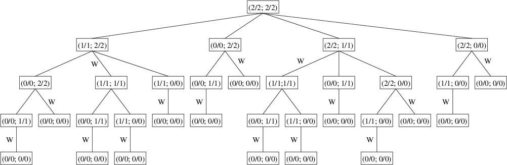

We we will now present an example of a common technique involving dictionaries. Consider the following variation of the 2-player game, Nim. The board consists of a number of stones arranged into several piles. Associated with each nonempty pile is a limit, which is a positive integer no greater than the number of stones on that pile (the limit for an empty pile is always 0). Players alternate taking stones according to the following rules:
The player taking the last stone wins. Note that by the rules of the game, there will always be a winner — a draw is impossible.
For example, suppose we start a game with three piles, each containing 10 stones with a limit of 9. We will denote this board position as (10/9; 10/9; 10/9). If Player 1 removes two stones from Pile 1, the resulting position is (8/4; 10/9; 10/9). Note that because 2 stones were removed from Pile 1, its new limit is 2 x 2 = 4. If Player 2 now removes 4 stones from Pile 2, the resulting position is (8/4; 6/6; 10/9). Note that because 4 stones were removed, the new limit for Pile 2 would become 2 x 4 = 8; however, because only 6 stones remain, the new limit is 6. Play then continues until a player wins by taking all remaining stones.
Let us define a winning play as any play giving a position from which there is no winning play. Thus, if we make a winning play, there are two possible cases. In the first case, there are no winning plays from the resulting position because there are no legal plays. This means we just took the last stone and won the game. In the other case, there are legal plays, but none is a winning play. Our opponent must make one of these plays. Because it isn’t a winning play, there must be a winning play from the resulting position. Therefore, an optimal strategy is to make a winning play whenever one exists. Because of the way a winning play is defined, if a winning play exists, following this strategy will enable us to continue to make winning plays until we eventually win the game. If no winning play exists, we just have to make some play and hope that our opponent blunders by making a play that is not a winning play. If that happens, a winning play will be available, and our strategy leads us to a win.
Consider the following examples:
Given enough stones and piles, finding a winning play or determining that there is none is challenging. In order to develop a search algorithm somewhat similar to the one described in “Tries in Word Games”, we can define the following tree:
Thus, the tree defined by (2/2; 2/2) is as follows:

The winning plays have been marked with a ‘W’ in the above tree. As in “Tries in Word Games”, this tree is not a data structure, but simply a mental guide to building a search algorithm. Specifically, we can find a winning play (or determine whether there is none) by traversing the tree in the following way:
Note that the above algorithm may not examine all the nodes in the tree because once it finds a winning play, it returns it immediately without needing to examine any more children. For example, when processing the children of the node (1/1; 2/2), it finds that from its second child, (1/1; 1/1), there is no winning play; hence, it immediately returns the play that removes one stone from Pile 2 without even looking at the third child, (1/1; 0/0). Even so, because the size of the tree grows exponentially as the number of stones increases, once the number of stones reaches about 25, the time needed for the algorithm becomes unacceptable.
Notice that several of the nodes in the tree occur multiple times. For example, (1/1; 1/1) occurs twice and (1/1; 0/0) occurs five times. For a large tree, the number of duplicate nodes in the tree increases dramatically. The only thing that determines the presence of a winning move is the board position; hence, once we have a winning move (or know that none exists) for a given position, it will be the same wherever this position may occur in the tree. We can therefore save a great deal of time by saving the winning move for any position we examine. Then whenever we need to examine a position, we first check to see if we’ve already processed it — if so, we just use the result we obtained earlier rather than processing it again. Because processing it again may involve searching a large tree, the savings in time might be huge.
The technique outlined in the above paragraph is known as memoization (not to be confused with memorization) — we make a memo of the results we compute so that we can look them up again later if we need them. A dictionary whose keys are board positions and whose values are plays is an ideal data structure for augmenting the above search with memoization. As the first step, before we look at any plays from the given board position, we look up the position in the dictionary. If we find it, we immediately return the play associated with it. Otherwise, we continue the algorithm as before, but prior to returning a play (even if it is null), we save that play in the dictionary with the given board position as its key. This memoization will allow us to analyze board positions containing many more stones.
To implement the above strategy, we need to define two types - one to represent a board position and one to represent a play. The type representing a play needs to be a class so that we can use null to indicate that there is no winning play. The type representing a board position can be either a class or a structure. Because the dictionary needs to be able to compare instances of this type for equality in order be able to find keys, its definition will need to re-define the equality comparisons. Consequently, we need to redefine the hash code computation to be consistent with the equality comparison. The next two sections will examine these topics.